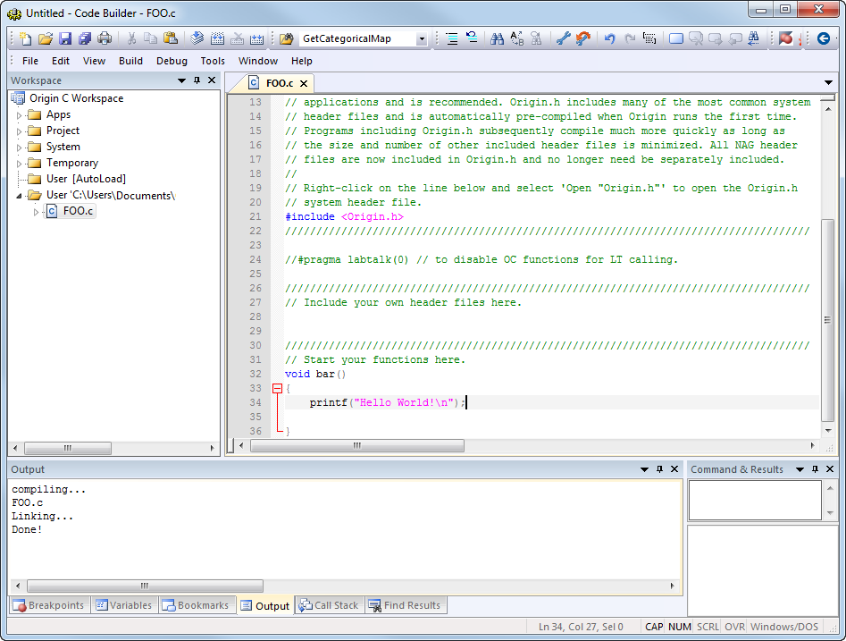

In diesem Tutorial erstellen Sie einen Arbeitsbereich im Code Builder von Origin, fügen eine Quelldatei mit einer neuen Funktion hinzu und erstellen, testen und speichern dann die Arbeitsbereichsdatei. Darüber hinaus konfigurieren Sie das Aussehen des Code Builders.
Origin-Version mind. erforderlich: Origin 2016 SR0
Dieses Tutorial zeigt Ihnen, wie Sie:
Ein Arbeitsbereich ist eine Sammlung von Dateien, die von einer einzelnen Menüoption in Origins Code Builder geöffnet werden kann (Datei: Arbeitsbereich öffnen). Dazu können alle Textdateien gehören. Es muss sich nicht notwendigerweise um Quellcodedateien handeln; es können beispielsweise auch Notizen sein.
Alle Dateien, die über einen Arbeitsbereich in der Mehrdokumentenoberfläche geöffnet werden, können einzeln bearbeitet und gespeichert werden. Zusätzlich zu den Dateien, die auf der Mehrdokumentenoberfläche geöffnet werden, können die Quellcodedateien über das Menü Datei: Zum Arbeitsbereich hinzufügen zum Fenster des Arbeitsbereichs hinzugefügt werden.
Durch Einbinden der Quellcodedateien in das Arbeitsbereichsfenster können Sie mit den entsprechenden Menüoptionen oder Symbolleistenschaltflächen einzelne oder mehrere Dateien erstellen. Auf Headerdateien kann innerhalb von Quelldateien verwiesen werden und müssen nicht in das Arbeitsbereichsfenster geladen oder gar auf der Mehrdokumentenoberfläche geöffnet werden.
Da Sie einen Arbeitsbereich unter einem neuen Namen speichern können, ist es möglich, mehrere Arbeitsbereichsdateien zu haben. Es kann allerdings nur jeweils eine Arbeitsbereichsdatei geöffnet sein.
Um ein Histogramm zu erstellen:
void bar() { printf("Hello World!\n"); }
bar
Origin antwortet mit Hello World!
Die Abbildung zeigt die Arbeitsbereichsdatei foo.ocw, die eine einzelne Quelldatei foo.c auf der Mehrdokumentenoberfläche enthält. Die Datei wurde zum Arbeitsbereichsfenster hinzugefügt. Das Ausgabefenster zeigt, dass die Datei kompiliert wurde. Die Quelldatei enthält eine einzelne Funktion "bar( )", die in der Baumstruktur des Arbeitsbereichs aufgeführt wird. 
Der Arbeitsbereich des Code Builders hat sechs Unterordner: Apps, Project, System, Temporary, User [AutoLoad] und User. Dateien, die vom Anwender hinzugefügt wurden, wie z.B. foo.c, werden im Unterordner User abgelegt. Origin selbst verwendet Origin C für viele Analyseroutinen. Wenn auf diese Routinen zugegriffen wird, werden die Origin C-Quelldateien in den Arbeitsbereich geladen, entweder in den Unterordner System oder in den temporären Unterordner. Der Unterordner Project ist für Unterordner reserviert, die mit dem Origin-Projekt gespeichert und geladen worden sind. Das Anhängen einer Datei an ein Projekt wird in einem anderen Tutorial beschrieben.
Wenn Sie mit der rechten Maustaste auf Origin C-Arbeitsbereich klicken, verfügt das Kontextmenü über eine Option Bei Start erstellen. Wenn diese Option aktiviert ist, wird der letzte Arbeitsbereich, den Sie gespeichert haben, beim Neustart von Origin geladen. Alle Quelldateien in dem Arbeitsbereich werden erstellt und alle Funktionen in den Quelldateien sind zur sofortigen Nutzung verfügbar.
Weitere Informationen zum Erstellen von individuellen Quelldateien beim Programmstart durch Einfügen von Informationen in der Datei ORIGIN.INI finden Sie unter Bei Start erstellen.
Damit ist das Tutorial zum Arbeitsbereich des Code Builders beendet.
Anwenden können die Oberfläche des Code Builders konfigurieren, einschließlich Schriftarten und Farben, Farbe der Klammern, Symbolgröße und so weiter.
Um ein AppPaket zu erzeugen, müssen Sie die Verwendung des Ordners Apps im Arbeitsbereich des Code Builders mit des Hilfsmittels Packdateien verwalten kombinieren. Die folgenden Schritte zeigen Ihnen, wie eine Packdatei für eine App erstellt wird.
1. Klicken Sie auf der Symbolleiste Standard auf die Schaltfläche Code Builder , um den Code Builder zu öffnen.
2. Stellen Sie sicher, dass das Fenster Arbeitsplatz geöffnet ist. Sollte es das nicht sein, können Sie es im Menü Ansicht: Arbeitsbereich aufrufen. Klicken Sie mit der rechten Maustaste auf den Ordner Apps im Origin C Arbeitsbereich und wählen Sie Neu, um einen neuen Ordner hinzuzufügen.
3. Klicken Sie mit der rechten Maustaste auf den neu hinzugefügten Ordner Untitled und wählen Sie die Option Umbenennen, um dem Ordner den Namen "MeineApp" zu geben.
4. Klicken Sie mit der rechten Maustaste auf den Ordner MeineApp und wählen Sie Dateien hinzufügen, um den Dialog Dateien zu Arbeitsplatz hinzufügen zu öffnen. Navigieren Sie zu den vorbereiteten Dateien und wählen Sie sie aus. Klicken Sie dann auf die Schaltfläche Öffnen, um sie zu dem aktuellen Ordner hinzuzufügen.
5. Klicken Sie mit der rechten Maustaste auf den Ordner MeineApp, um die Option Erzeugen zu wählen. Sie werden direkt an das Hilfsmittel Packdateien verwalten weitergeleitet.
6. Sie können die hinzugefügten Dateien im unteren Bedienfeld von Packdateien verwalten sehen. Jetzt können Sie ein paar Informationen über MeineApp im Zweig Paket eingeben, wie unten zu sehen. Damit die App als Symbol in der Apps-Galerie angezeigt wird, müssen Sie ein bmp-Bild von 32*32 (in Pixel) vorbereiten und seinen Namen mit Erweiterung im Bearbeitungsfeld Symbol eingeben. Danach besteht die Möglichkeit, LabTalk-Skript im Feld Skript starten einzugeben, um Origin die Anweisung zu geben, was es beim Start der App tun soll.
7. Wählen Sie Datei: Speichern, um die Packdatei als .opx-Datei zu speichern. Später können Sie diese .opx-Datei per Drag&Drop in den Origin-Arbeitsbereich ziehen, um diese App zu installieren.
Die Tastenkombinationen im Code Builder machen die Arbeit mit dem Code effizient. In den folgenden Abschnitten werden nacheinander nützliche Tastenkombinationen eingeführt.
Laden Sie zuerst bitte diese zip-Datei herunter, extrahieren Sie sie und navigieren Sie dann zum Unterordner \Origin C Examples\Programming Guide\Practical Examples, um AccessMatrix hinzuzufügen. c durch Rechtsklick auf den Anwenderordner und Auswahl von "Dateien hinzufügen"
Strg+F2 fügt ein 'Lesezeichen umschalten' bei einer spezifischen Zeile ein. Sie können die Taste F2 verwenden, um zum nächsten 'Lesezeichen umschalten' zu gelangen.
Strg+F3 markiert alle ausgewählten Wörter ("MatData") im Code. Sie können die Taste F3 verwenden, um zum nächsten markierten "MatData" zu gelangen.
Mit dieser Tastenkombination finden Sie übereinstimmende Klammern im Code.
Diese Taste fügt ein 'Haltepunkt umschalten' bei einer spezifischen Zeile ein.
Diese Tastenkombination Strg+/ kommentiert die ausgewählten Zeilen, während Strg + Shift + / sie auskommentiert.
Nach Erstellen der *.c- und *.h-Dateien mit dem gleichen Namen können Sie die Tastenkombination Strg+Alt+O dazu verwenden, zwischen ihnen hin- und herzuschalten.
Bitte lesen Sie auch Tastenkombinationen im Code Builder, um weitere Informationen zu diesem Thema zu erhalten.